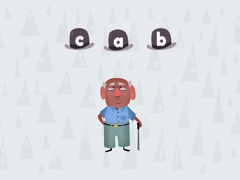

Rapid Letter Naming
The child names letters shown one at a time, for 60 seconds.
Reported to TEA · Emergent Literacy: Reading
Khan Kids assessmentLetter NamesSame skill, different response
Alignment: Both assess letter-name knowledge.
Gap: Khan says a letter name and the child selects the letter, moving from more common to least common letters. CPM shows a letter and the child names it aloud. It is timed (60s, 3s per letter) and counts letters named. Khan Kids is not timed.